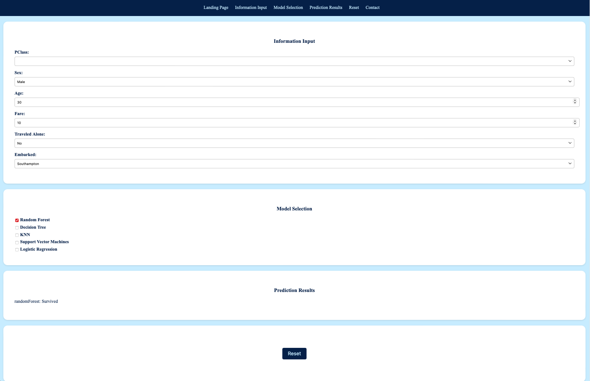

Overview
Our website introduces a software solution designed to predict the likelihood of survival for passengers involved in the Titanic accident. Utilizing machine learning algorithms, this predictive model analyzes historical data, extracting valuable insights to generate accurate survival predictions.
Using historical data from the Titanic disaster, this tool helps users understand the factors that influenced survival rates and provides insights into the significance of different passenger attributes.
Explore the features and functionalities of the Titanic Survival Predictor below.
Features
Dataset Information
The dataset used in the Titanic Survival Predictor includes information about passengers such as:
- PClass: Passenger class (First, Second, Third)
- Sex: Gender (Male or Female)
- Age: Age of the passenger
- Fare: Ticket fare
- Traveled Alone: Whether the passenger traveled alone (Yes or No)
- Embarked: Port of embarkation (Cherbourg, Queenstown, Southampton)
These features are significant in predicting survival rates and understanding the demographics of passengers aboard the Titanic.
Predictions are dynamically updated as users modify the input parameters, offering real-time insights into survival likelihood.
The website maintains a history of the last five passengers and their corresponding predictions within the current session, facilitating easy reference and comparison.
Survival Calculator
Functionality
The Survival Calculator allows users to input passenger details such as PClass, Sex, Age, Fare, whether they traveled alone, and the port of embarkation.
By leveraging techniques such as Random Forest, Decision Tree, KNN, Support Vector Machines, and Logistic Regression, our predictive model processes vast datasets related to Titanic passengers. Through this analysis, it distills complex patterns and relationships, enabling precise predictions regarding survival outcomes.
The predictions are continuously updated as the user modifies the input parameters, providing real-time insights into survival likelihood.
Survival Calculator Screenshot
Gallery
Here are some images and illustrations depicting the tragedy of the incident and how the survivors escaped.

Titanic Lifeboat

Sinking of the Titanic

Sunken and Rusted Titanic
Newspaper of the incident
Cool Picture

Titanic Poster